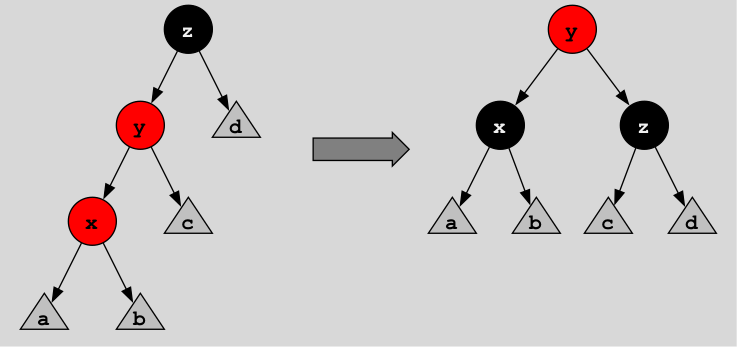
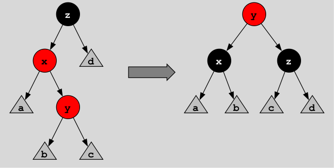
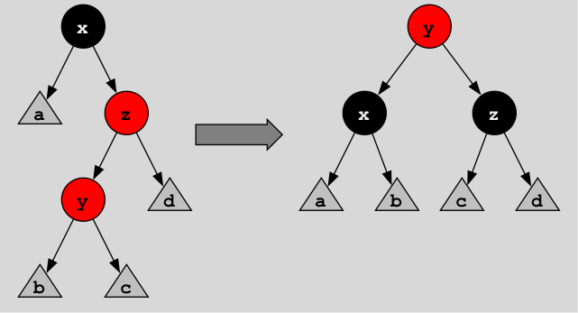
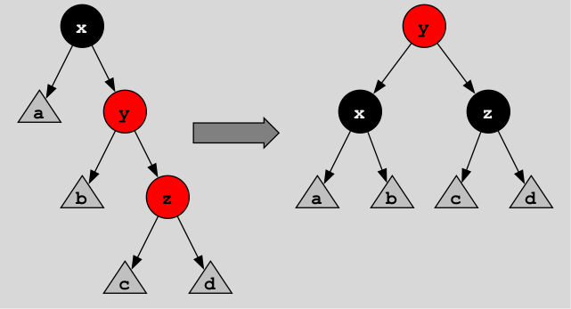

Part A: Red-black trees (75 points)
In this section, you will implement the red-black tree datatype, along with its associated functions.
As mentioned previously,
the file RedBlackTree.hs should start with this module declaration:
The where is not a mistake;
it's part of the syntax of module declarations
and implies that the entirety of the rest of the file is part of the module.
After this, put the definition of the datatypes into your file:
-- A color is either red or black.
data Color = Red | Black
deriving Show
-- A red-black tree is either a leaf or a tree node with a color,
-- two branches, both of which are trees, and a value of type a.
data Tree a = Leaf | Node Color (Tree a) a (Tree a)
deriving Show
In the Node constructor,
the first (Tree a) argument is the left subtree
and the second is the right subtree.
Then implement the functions described below.
Warning
You are not allowed to convert any red-black tree function arguments into lists of elements (or any other collection type of elements e.g. arrays of elements) in any of these functions except where specifically indicated. If you do, you will get a zero on the problem.
-
You may assume in all the functions that arguments that represent red-black trees represent valid red-black trees i.e. trees that obey all three tree invariants described previously, unless we explicitly tell you not to assume this. This will greatly influence the way you write your functions. Failure to take advantage of this where it's advantageous will result in lost marks. We'll provide hints for the less obvious cases.
-
You can't add anything to the type definitions given above; for instance, you can't make
Coloran instance ofEq, because you don't need to compare colors for equality. (Don't do this indirectly either e.g. by defining aneqColorhelper function.) Pattern matching on the datatypes can do everything you need.
Here are the descriptions of the functions you need to implement.
1. member
[5 points]
Write the member function, which has this type signature:
This function takes an element and a red-black tree as its arguments
and returns True if the element is in the tree.
Note: the color of nodes is not used in this function.
(Unused arguments in patterns should use the _ notation
so as not to trigger compiler warnings.)
Assume that the input tree is ordered;
use the ordering property to only search the parts of the tree
that can possibly contain the element.
2. toList
[5 points]
Write the toList function, which has this type signature:
It takes as its argument a red-black tree and returns a list of all the tree elements given by an in-order traversal. This means that for a node, you collect all the left subtree values first, then the node value, then the right subtree values. This function can be written in two lines.
Clearly, here it's OK to convert the tree to a list,
because that's the whole point of the function! 
3. insert
[25 points]
Write the insert function, which has this type signature:
This is the hardest (and most interesting) function in the assignment. The reason it's tricky is because you can't just naively add a node to the tree; you also have to make sure that the tree is balanced when you are finished. This is why we need the colors on the nodes. We'll walk you through this function in some detail.
First of all, since Haskell is a functional language, although we say we are "inserting" an element into a tree, what we are really doing is creating a new tree with one extra element. The original tree is not altered in any way. The new tree will share a lot of structure with the original tree, so we won't modify any part of the old tree that doesn't need to be changed in the new tree.
If it weren't for the balancing constraints (the red and black invariants), this would be an easy function to write:
-
If a tree being inserted into is just a leaf, return a node whose branches are leaves.
-
If the new element is the same as the element in the root node of the tree, return the tree unchanged.
-
Otherwise, determine whether the new element needs to be added to the left or right branch depending on whether it's smaller or larger than the element in the root node, add the element to the correct branch, and reconstruct the final tree.
The only problem is that when you do the last step, you might be causing the tree to violate the red or black invariants and thus become unbalanced. Also, what color should the node containing the new element be? If you think about it, you'll realize that the new node will be put at the base of the tree, right above the leaves. Since the leaves are black, the new node should be colored red so as not to violate the black invariant. However, when you do this, there is a chance that the parent node of the new node will also be red, which violates the red invariant (no red node can have a red parent node). So there has to be a way to re-balance the tree after adding a node to preserve both the red and black invariants. And that's the tricky part.
Here's a template version of the code you should write, with some parts filled in:
insert :: Ord a => a -> Tree a -> Tree a
insert elem t = makeBlack (ins elem t)
where
-- Insert an element into a tree.
ins :: Ord a => a -> Tree a -> Tree a
ins elem Leaf = Node Red Leaf elem Leaf -- new nodes are colored red
ins elem t@(Node color left elem' right)
| elem < elem' = balance color (ins elem left) elem' right
| elem > elem' = {- TODO: by analogy with the previous case -}
| otherwise = t -- element already in the tree; no insertion required
-- Make the root of the tree black.
makeBlack :: Tree a -> Tree a
makeBlack Leaf = Leaf
makeBlack (Node _ left elem right) = Node Black left elem right
-- Balance a red-black tree under construction which may not satisfy
-- the red and black invariants.
balance :: Ord a => Color -> Tree a -> a -> Tree a -> Tree a
balance Black (Node Red (Node Red l1 e1 r1) e2 r2) e t =
Node Red (Node Black l1 e1 r1) e2 (Node Black r2 e t)
balance = {- TODO: 3 more cases omitted -}
balance color l e r = Node color l e r -- no balancing needed
The basic insertion code is in the ins helper function.
If we didn't care about balancing or colors, the line:
would be just:
and similarly for the elem > elem' case.
However, adding the new element elem creates a new red node,
and this can make the tree violate the red invariant.
Therefore, we call the balance function
with the same arguments as the Node constructor would have gotten.
Its job is to create a new tree which is guaranteed to be balanced i.e.
which doesn't violate any of the invariants.
(The order invariant won't be violated, so we don't have to worry about that.)
Since we are adding the new element to the left subtree (in this case),
only the left subtree could possibly violate the red invariant
by having a red node with a red parent.
Nevertheless, we will need both subtrees in order to re-balance the tree.
It turns out that there are only four different cases
that need to be rebalanced.
Here is case 1:

Look at the tree on the left of the arrow.
In this case, the left subtree is the node labelled y,
the right subtree is labelled d,
and the root node of the new tree is labelled z.
(The gray triangle nodes (a to d) represent balanced subtrees.)
You can see that the left subtree violates the red invariant
because node y is red and has a child node x which is also red.
What you do is convert the tree on the left of the arrow
to the tree on the right.
This tree is still correctly ordered (because x < y < z)
but now node y is the root of the tree
and node x has changed color from red to black.
This new tree doesn't violate any of the invariants;
ordering is preserved, no red node has a red parent,
and both branches have one black node
in addition to the black nodes along the paths
starting from a, b, c, and d,
which all have the same number of black nodes.
This corresponds to the following line from the balance function:
balance Black (Node Red (Node Red l1 e1 r1) e2 r2) e t =
Node Red (Node Black l1 e1 r1) e2 (Node Black r2 e t)
Note that balance doesn't get an entire tree as its arguments;
it gets the pieces of a tree as separate arguments
(color, left subtree, element, right subtree).
Nevertheless, the idea is the same.
You can see that the root's color is Black,
the left subtree (corresponding to nodes y and x in the diagram)
is Node Red (Node Red l1 e1 r1) e2 r2,
the node element is e,
and the right subtree (corresponding to label d in the diagram) is t.
The label a in the diagram is l1, b is r1, and c is r2.
The output of the function is just the tree to the right of the arrow.
These kinds of tree manipulations are referred to as "tree rotations" for obvious reasons.
Notice how Haskell's algebraic datatypes have made a fairly complicated transformation very simple to write! This is a key advantage of algebraic datatypes when working with sophisticated data structures.
Make sure you understand this case!
If you do,
filling in the rest of the cases of the balance function
will be straightforward.
Here is the second case:

The output tree is the same as before, but the inputs will be different. You have to fill in the code for this case.
Here are the last two cases:


You need to fill in the code for these cases as well. Any other case does not need to be balanced, so the default line:
is in effect.
You might be wondering what this helper function is for:
-- Make the root of the tree black.
makeBlack :: Tree a -> Tree a
makeBlack Leaf = Leaf
makeBlack (Node _ left elem right) = Node Black left elem right
It turns out that when inserting into a red-black tree,
you may end up with a red node at the root with a red child node
(violating the red invariant), but with all other invariants satisfied.
In this case we can simply recolor the root node to black
to make the black invariant hold.
This won't affect the order invariant (obviously)
and it won't change the fact that all paths from the root to the leaves
have the same number of black nodes
(although that number will be one greater than before).
You won't need to use makeBlack in any of the code you need to fill in.
If you think that this code is complicated, you'd be right! Tree balancing code is often quite complex, and there are some kinds of trees whose balancing code is even worse than this.1 The nice thing about red-black trees is that they are very efficient in practice, so once we get through writing the code, we have a very useful data structure.
4. fromList
[5 points]
Write the fromList function, which has this type signature:
This function takes a list as its argument
and returns the red-black tree obtained by inserting
all the list elements into an empty tree.
This can be written in one line using foldr.
(This is not a requirement,
but try to find the foldr definition; it's very simple.)
5. minDepth and maxDepth
[5 points]
Write the minDepth and maxDepth functions,
which have these type signatures:
These functions return the minimum and maximum depths of the tree,
respectively.
That is, minDepth is the smallest distance
from the root node to a leaf,
while maxDepth is the largest such distance.
A tree which is just a Leaf (i.e. an empty tree) has depth 0.
Recall that by "distance" to a leaf
we mean the number of times you can go
from a node to one of its branch nodes before you hit a leaf.
6. testInvariant1
[10 points]
Write the testInvariant1 function, which has this type signature:
This function tests the order invariant.
This invariant requires all nodes to have values
that are strictly larger than all node values in the node's left subtree
and strictly smaller than all node values in the node's right subtree.
This function returns True if the tree obeys the invariant.
Obviously, in this function the node colors are irrelevant. You probably want to write some helper functions to make this function easier to write.
Your code should not be gratuitously inefficient. For instance, don't compare a node value against every single value in its left/right subtree, because that isn't necessary. Marks will be taken off for inefficient solutions. Doing it right isn't hard or tricky.
7. testInvariant2
[10 points]
Write the testInvariant2 function, which has this type signature:
This function tests the red invariant,
which is that no red node has a red parent.
Don't forget to use _
for unused components of the Node constructor, as usual.
Tip
Nested pattern matches are extremely helpful here!
With them, you can write this function in a few short lines of code.
If you think you need to use a case statement, think again.
You do not have to compare colors using the == or /= operators,
so don't make Color an instance of the Eq type class
or define a color comparison function.
8. testInvariant3
[10 points]
Write the testInvariant3 function, which has this type signature:
This function tests the black invariant, which is that all paths from the root of the tree down through a sequence of nodes to any leaf have the same number of black nodes.
Note that the color of the root node is irrelevant (because it's present in all sequences) and the "color" of the leaf nodes are also irrelevant (because they are all the same).
This function is a bit tricky, so here is a template for you to fill in:
testInvariant3 :: Tree a -> Bool
testInvariant3 t = allEqual (leafCounts t 0)
where
-- Given a tree, return a list of the count of black nodes on every path
-- from the root of the tree to a leaf.
leafCounts :: Tree a -> Int -> [Int]
leafCounts Leaf n = [n]
leafCounts (Node Black left _ right) n = {- TODO -}
leafCounts (Node Red left _ right) n = {- TODO -}
-- Return True if all the elements of a list are equal.
allEqual :: Ord a => [a] -> Bool
allEqual [] = True
allEqual [_] = True
allEqual (x:r@(y:_)) | x == y = allEqual r
| otherwise = False
The code marked {- TODO -} is for you to fill in;
please remove the {- TODO -} comments!
The amount of code you need to add is quite small
(one short line in each case).
-
You may have encountered this phenomenon in a CS 4 midterm exam. ↩